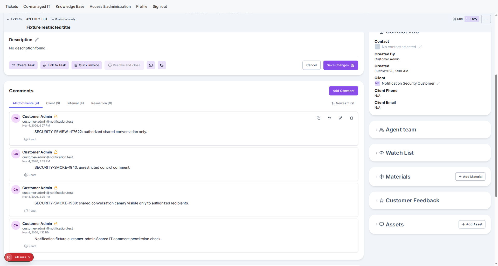
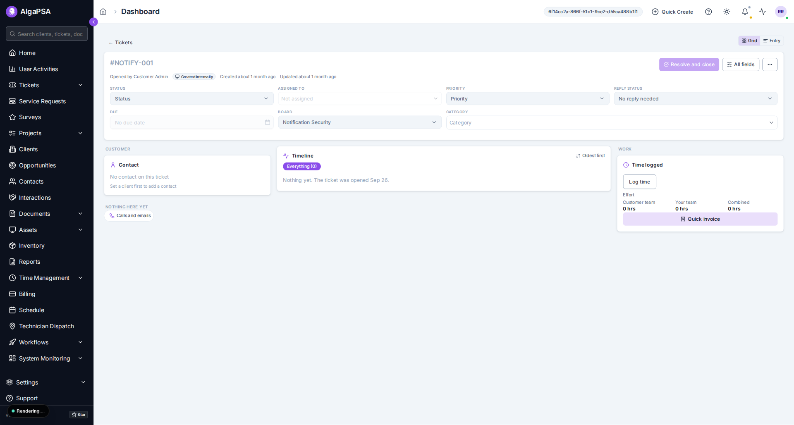

Sponsor notifications respect current access
A. What changed and why it matters
This review stays within the card’s two notification-security findings. The protections are already on main; replacement PR #4459 preserves the review artifacts. It changes no product code or release flags. No broader plan is attached to this card.
A sponsor could read a shared ticket while being denied its title or conversation, yet notifications could reveal those fields. Failed routing mail could later go to a mailbox captured before the sponsor changed their address. Delivery now uses the recipient’s current field permissions and active identity, and routing recovery resolves the current mailbox while completing the original delivery ledger.
The captain should decide whether this protects hidden information while keeping permitted notifications useful, including after a failed send. No security acceptance is implied by these agent results.
Exact reviewed HEAD: 60645bd2464d3db92ac65a91e8b7f79360e5dddd
Prepared: 2026-11-21T00:27:25.141212+00:00 · PR checks (owned by CI Watch)
Revision scope: notification security code checked here is the source tree at PR base 4ef99e75d5d0535fa815a0daf51e9e76fe87ba9f; the PR diff through the reviewed checkout consists of review documentation/evidence. The automated checks in this guide were rerun against checkout 60645bd2464d3db92ac65a91e8b7f79360e5dddd. Historical browser/video evidence is from d17622d44fc011c45061041f61d221e113223e6b.
Current-checkout automated evidence: at exact HEAD 60645bd2464d3db92ac65a91e8b7f79360e5dddd, 51 projection/routing tests, 12 fixture tests, 6 in-app payload tests, the full 68-test PostgreSQL/SMTP integration file, and co-managed package typecheck passed; the server typecheck did not complete, as detailed below. The notification fixture prerequisite check passed read-only. Results and test substitutions are recorded in the current-checkout verification record. The required current-revision browser/runtime validation remains unmet.
Validation status: incomplete. The committed handoff requires current-revision runtime validation and says focused tests do not establish runtime equivalence. The board event at 2026-11-21 00:05:53Z records an instruction to keep the app server stopped; it does not authorize changing that validation requirement. The walkthrough below is historical evidence for d17622d44fc011c45061041f61d221e113223e6b (2026-11-04), not the current PR head. Current-checkout automated results do not substitute for the unmet browser/runtime requirement.
Lightweight review starts here and needs no app. Full Open Review — NOTIFY-001 is registered on demand at port 4395; it is unbuilt, stopped and unvisited. The development ticket is also stopped by instruction. All app links below are route-checked in source, were visited historically where stated, and have not been validated in a current running app.
B. Start here: the main walkthrough
Watch the 71-second historical recording, then compare the restricted and unrestricted results below. The customer author and two sponsor roles use the same isolated ticket. The starting assignment is restored to the restricted sponsor; current database inspection confirms both independent policies and active users. The captain can assess the recorded journey now; interactive repetition requires an explicit Full Open Review request.
Historical chapters and timing · Historical SMTP/database assertions
- Author a shared comment. Open NOTIFY-001 — customer author view (on demand) or the development ticket (stopped). Select Add Comment, choose Shared IT, type a unique message, then Add Comment. The editor and audience menu have no direct URL. Expected: the comment persists and reaches authorized sponsors. Historical result:
SECURITY-REVIEW-d17622persisted as comment515aa1fa-4061-4848-95f3-f437f32d11ff; a second control comment also persisted. Persisted comments and recipient notifications. The author’s current runtime ticket read/update permissions are verified by the current fixture check; 12 current fixture tests cover setup and cleanup.

- Inspect the restricted recipient. Switch roles using development sign-in (sign out first). Fixture identity details are in the fixture catalog. Open NOTIFY-001 — sponsor view (on demand) / historically visited sponsor detail (stopped), then the notification bell (no direct URL for its open state). Expected: the ticket title and conversation stay hidden; the new notification has no comment preview. Historical result: shared detail hides both; the new notification reads Customer Admin commented on ticket #Shared ticket: "". Actual restricted SMTP message likewise contains neither title nor comment body.


- Compare the unrestricted recipient. The control has independent read policy with no redactions. The demonstration temporarily selected that recipient via the fixture assignment script, then posted another Shared IT comment through the same customer editor. Open the same historically visited sponsor detail (stopped) as the control and its notification bell. Historical result: the title and
SECURITY-REVIEW-d17622-CONTROLremain visible in both the in-app notification and actual control SMTP message. The restricted assignment is restored for repeat review.

- Ordinary routing still delivers. A fresh routing event for NOTIFY-001 — sponsor view (on demand) was published through the card’s isolated Redis stream. The real subscriber delivered the ordinary routing email with permitted title and actor on its first attempt. Original routing ledger: sent, attempts=1. This backend consumer was exercised on the historical revision using event setup, not a UI routing gesture. Current routing recovery is covered below by an automated PostgreSQL test.
C. Representative failure and recovery
The following screenshot and recorded replay are from d17622d44fc011c45061041f61d221e113223e6b. The current-revision result follows immediately below.
A failed mail must not authorize today’s user but deliver yesterday’s data to yesterday’s mailbox. For NOTIFY-001 sponsor detail, the review seeded routing source cc658985-1411-4c26-a0e9-01524dadc3a3 and temporarily pointed only fixture sponsor SMTP to closed port 1. The first attempt failed with ECONNREFUSED and retained the captured recipient.
After restoring SMTP, the sponsor email changed to an uppercase, whitespace-padded current address. Home policy hid title/organization; relationship policy hid ticket number/actor. Replaying through the real server produced masked SMTP mail to the normalized current address and completion of the original old-address ledger with attempts=2. The old mailbox count stayed unchanged. In-app routing also completed with masked content.

Operational interpretation: repair the mail provider, then retry through the authorization-aware recovery path. Do not resend a cached rendered message. This demonstration used event replay rather than waiting for the automatic scheduler. Exact replay and restore commands and policy/address change script are available for repetition. All temporary SMTP/address/policy/assignment changes were restored; baseline verification passed.
pendingRouting and deliverRouting. The first attempt was rate-limited, the sponsor email changed (uppercase and padded), and home-policy redactions tightened alongside relationship redactions. The second attempt sent one rendered message to the normalized current address, omitted ticket number, title, actor and organization, and closed the original captured-address row as sent / attempts=2. Passing execution · Exact test and SMTP/DB assertions.The same focused run exercised delayed comment retry after attachment reconstruction: tightened note, requester, assignee, category and ticket-number redactions removed protected content and attachments; a revoked recipient received no additional message. A rate-limited routing regression verified authorization-aware ledger recovery. These use an injected rate limiter, in-memory Redis and/or Nodemailer stream transport where documented below. They do not test the five-minute scheduler.
D. Review decision
Both card goals have current-revision behavioral coverage: per-recipient notification redactions and routing delivery to the current authorized sponsor address. The earlier UI recording shows the normal author → restricted sponsor → unrestricted sponsor experience. Current-checkout automated checks at 60645bd2464d3db92ac65a91e8b7f79360e5dddd exercise delivery behavior. Required current-revision browser/runtime validation remains unmet, so runtime equivalence and security acceptance are unverified. No product defect was observed in the checks run.
Limits: current-revision browser/runtime validation remains unmet; server typecheck did not complete (12 GiB heap exhausted, 16 GiB retry stopped under host paging); no production build, automatic recovery scheduler, external mail vendor, broad regression suite or security-finding-resolved acceptance check was run. Current tests use the explicit seams listed in the appendix. These are coverage limits for the captain’s decision, not an approval grant.
The captain’s choices:
- Approve the entire card, including merge of PR #4459, by completing Human Review Approval once.
- Return to Draft Implementation for concrete code changes.
- Return to Prepare Human Review for demonstration or setup corrections.
- Hold or request investigation.
This guide records agent results only. Human approval has not been granted. CI Watch owns CI; Merge PR owns merging after approval. No separate AI evidence approval or second merge approval is requested.
E. Reference appendices
Current-checkout checks, fidelity and limitations
| Check | Actual result | What was real / substituted |
|---|---|---|
| Projection and routing | 51 passed | Production projection and routing logic; unit query and authorization doubles. Covers aliases and invalid current sponsor identities. |
| Fixture tests | 12 passed | Fixture apply/reset behavior with isolated test doubles. |
| Fixture prerequisites | Passed read-only | Dedicated fixture database; password verifier, runtime ticket permissions, active identities, and separate recipient policies. No fixture changes or live delivery. |
| In-app consumer | 6 passed | Actual subscriber; fake query builder, recipient plan and persistence action. Asserts the payload passed for persistence, not a new database notification. |
| PostgreSQL/SMTP integration file | 68 passed | Includes sponsor content in both recipient orders, attachment reconstruction followed by fresh policy, changed sponsor email and policy on routing recovery, original-ledger completion, and PgBoss recovery. Test-owned ephemeral SMTP sinks and a Nodemailer stream transport are used as detailed in the verification record; external vendor delivery is not claimed. |
All current test fixtures roll back and SMTP-sink hosts close at teardown. These ephemeral SMTP sinks are test-owned; the registered persistent review-smtp service provides the existing GreenMail mailbox for the historical walkthrough. No app process was started.
Exact commands, results and evidence limitations. These checks were run at the reviewed checkout SHA before this documentation-only repair; the security source tree is unchanged from PR base 4ef99e75d5d0535fa815a0daf51e9e76fe87ba9f.
Fixture identities, routes and starting state
Canonical test login: qa@emeraldcity.oz / NineMinds1234!; verified in the historical UI session. This general QA identity is distinct from the dedicated notification roles. Their local test login definitions are linked in fixture identity definitions; credentials are not copied here. All three fixture logins worked in the historical run; current password-verifier and runtime permission checks pass. No current browser login was attempted.
| Role / fixture | Exact identity / entry |
|---|---|
| Customer author | user c1aa0b50-d026-5f7d-95e0-9cac66672bd1; tenant 96d5fbd6-c264-51a1-98cd-2c9e480cd959. NOTIFY-001 customer ticket (on demand) |
| Restricted sponsor | user 340aa261-3f33-5eb2-8e56-36dfb1e4a02e; hides tickets.title, comments.content, assignee_name. Assigned at baseline. NOTIFY-001 shared ticket (on demand) |
| Unrestricted sponsor | user 395c61f9-6cb1-52df-944d-5829636e2136; independent policy without redactions. NOTIFY-001 shared ticket (on demand). |
| Shared relationship | 66cb6b8e-062f-5fd0-a48f-6092b7d5c05c; sponsor tenant 6f14cc2a-866f-51c1-9ce2-d55ca488b1f1. Historical relationship/ticket route (stopped) |
There is no verified direct user-management record link in this run; roles are accessed through sign-in and the linked ticket, not an asserted user-detail route. Fixture owns active allocation, operation locator, staff assignments, company context and both tenant SMTP configurations. Test mail stays in the local emulator.
Environment, services and reset
Development :3988 ticket; guide :4394 guide; optional production :4395 ticket — unvisited/on demand. The optional production review app remains unbuilt and stopped. App URLs are historical and currently unverified.
GreenMail is the real wire-level SMTP emulator in compose container alga-psa-local-test-imap-test-server-1, SMTP port 3025, HTTP 8080. Registered review-smtp monitors this existing container, with its HTTP readiness checked; compose owns its lifecycle. Restricted fixture mailbox API / Control fixture mailbox API. Sanitized captures above are easier to read; reply tokens were omitted from published text.
Card Redis prefixes: alga-psa:security-2-findings-in-deliveryprovider-ts:, stream prefix event-stream:security-2-findings-in-deliveryprovider-ts:, group security-2-findings-in-deliveryprovider-ts. Consumer attribution: historical consumer-641721 mapped to this checkout/server on 2026-11-04. This is not current consumer attribution; the app remains stopped.
Reset, replay, verification and board start commands · Local DB script runner · Scoped restore script. Normal baseline is restored; historical demonstration comments and sent ledgers are retained. Full reset removes those records and fixture sessions; do not reset the shared mailbox service globally.
Source trace and retained evidence
Current identity, normalized address and retained ledger key · Per-recipient comment policy · Canonical redaction projection · Send-time retry projection · Routing delivery consumer.
Source confirms the two original data flows are repaired: notification authorization returns redactions into recipient payloads; sponsor users are batch-loaded by tenant and principal, must be active/internal, and supply the normalized current address. The captured address remains only the ledger identity. The current PR diff against base 4ef99e75 consists of review documents and evidence.
Routes: customer ticket · sponsor shared ticket. No direct user-detail route was verified; fixture users are accessed by sign-in and their linked ticket.
Historical persisted comments and notifications · historical initial event · historical replay event · historical ordinary event · superseded archive note. Historical artifacts are preserved unchanged, and are never labeled as current sends.
Handoff metadata. The committed guide and the served guide are maintained as separate artifacts; the served copy was synchronized to this source for the repair, but external serving is not itself a runtime validation.